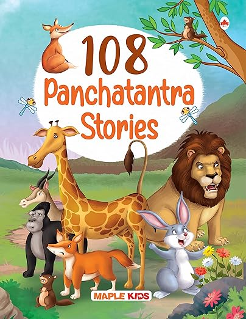

In my efforts to learn Mandarin, I try to translate English texts into Mandarin. This forces me to practice forming coherent Mandarin sentences. In the same vein, I am translating stories from Panchtantra (पंचतंत्र). Panchtantra is a collection of short stories meant to teach moral lessons. These were composed by Vishnu Sharma. These stories are meant for kids, so they generally involve animal characters like rabbit, fox, lion, etc. There have been many books containing Panchtantra stories. I am using the stories from the book "108 Panchtantra Stories" from Maple Press.

狮子和兔子
从前，有一只狮子为了午餐抓了很多动物。于是别的动物去见了狮子。她们说：“先生，我们每天送一只动物给您做午餐”。狮子答应了。有一次，轮到兔子了。
The blue jackal